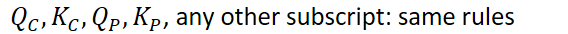

Properties-of-the-equilibrium
Properties of the equilibrium constant
-
 {width="6.5in" height="0.5625in"}
{width="6.5in" height="0.5625in"}-
Example:
-
 {width="5.4375in" height="0.3333333333333333in"}
{width="5.4375in" height="0.3333333333333333in"} -
{width="3.8229166666666665in" height="0.7291666666666666in"}
-
{width="5.489583333333333in" height="0.3333333333333333in"}
-
 {width="3.71875in" height="0.7083333333333334in"}
{width="3.71875in" height="0.7083333333333334in"}
-
-
-
Reactions in series
-
If more than one reaction occurs in a series,
-
 {width="7.895833333333333in" height="0.6875in"}
{width="7.895833333333333in" height="0.6875in"} -
For:
-
 {width="2.3020833333333335in" height="0.3333333333333333in"}
{width="2.3020833333333335in" height="0.3333333333333333in"} -
{width="2.96875in" height="0.3333333333333333in"}
-
{width="2.8125in" height="0.3333333333333333in"}
-
{width="5.947916666666667in" height="0.3541666666666667in"}
-
-
-
-
Multiple reactions
-
If stoichiometric coefficients of a reaction are multiplied by a factor, the exponents in K are raised to the power of that factor:
-
K is raised to the power of the factor
- Double the equation => square K
-
{width="2.5104166666666665in" height="0.7083333333333334in"}
-
 {width="2.9583333333333335in" height="0.7291666666666666in"}
{width="2.9583333333333335in" height="0.7291666666666666in"} -
{width="4.697916666666667in" height="1.0416666666666667in"}
-
-
-
 {width="8.697916666666666in" height="0.3541666666666667in"}
{width="8.697916666666666in" height="0.3541666666666667in"}- {width="5.916666666666667in" height="0.3541666666666667in"}